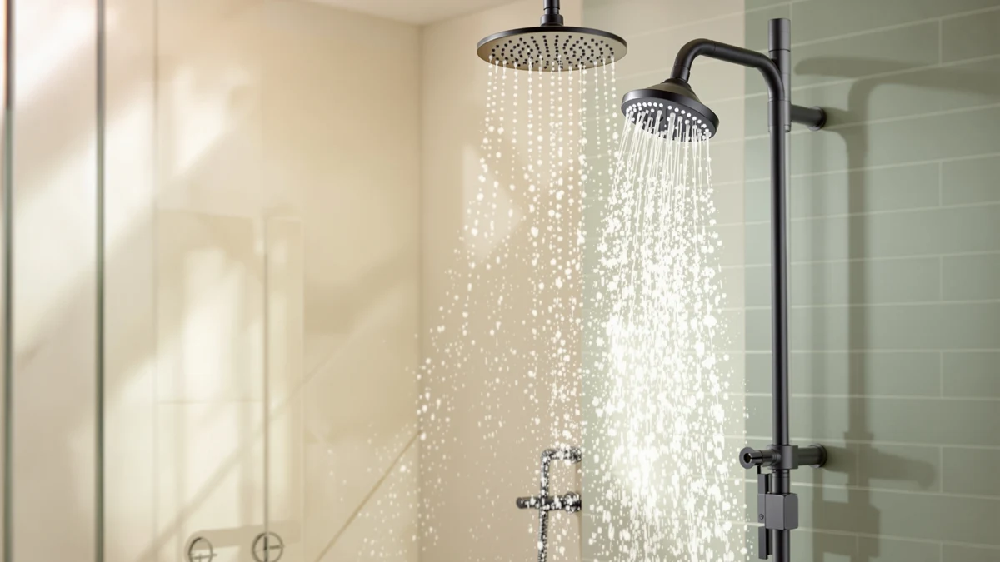

Kohler K-22165-G-BN Forte Multifunction Hand Shower Head Review (2026): Worth It?
Prices and picks verified as of November 2026. Independent, reader-supported reviews.


Quick Answer
This kohler k-22165-g-bn forte multifunction hand shower head review centers on the KOHLER K-22165-G-BN Forte® Multifunction Hand, a $176.98 handheld shower head in brushed nickel with three spray settings and a 1.75 GPM flow rate. Weighed against the Delta In2ition 2-in-1, the KOHLER Statement fixed head, and the KOHLER Awaken rain head, it earns the top spot here for anyone who wants a dedicated handheld with a massage setting rather than a fixed-only or higher-flow alternative.
Our pick: KOHLER K-22165-G-BN Forte® Multifunction Hand, $176.98 Check Price on Amazon
Bottom line: our top pick is the KOHLER K-22165-G-BN Forte® Multifunction Hand Shower Head at $177.02.
Things to Know Before You Buy
- The KOHLER K-22165-G-BN Forte is priced at $176.98, close to the Delta In2ition at $176.69 and the KOHLER Statement at $175.87, and about three dollars above the KOHLER Awaken rain head at $173.95.
- It runs a 1.75 GPM flow rate with three spray settings: full coverage, pulsating massage, and silk spray, the same flow rate as the Delta In2ition and the KOHLER Awaken, but lower than the Statement's 2.5 GPM.
- KOHLER builds its body from ABS plastic with chrome plating and a brushed nickel finish, the only brushed nickel option among four otherwise chrome-finished competitors in this comparison.
- None of the four products in this kohler k-22165-g-bn forte multifunction hand shower head review carry a published rating or review count in our database, so we're weighing them on specs, pricing, and owner feedback rather than aggregate scores.
If you clicked into this kohler k-22165-g-bn forte multifunction hand shower head review, you're likely trying to decide whether a brushed nickel finish and a massage spray setting justify the $176.98 price tag on the KOHLER K-22165-G-BN Forte. KOHLER builds this handshower around three spray modes, full coverage, pulsating massage, and silk spray, and we treat it as the lead pick in a comparison that also includes a 2-in-1 dual head and two fixed KOHLER alternatives in a similar price bracket.
We put the Forte next to the Delta In2ition 2-in-1 at $176.69 and two KOHLER fixed heads, the Statement at $175.87 and the Awaken rain head at $173.95, three options that land within three dollars of each other. Because the prices sit so close together, the deciding factor here comes down to format and finish, not which listing costs less.
Why You Should Trust Us
Ilane Tall covers bathroom fixtures for Best Shower Heads and has spent years comparing filtered, fixed, and handheld shower heads across price tiers for this site. We built this kohler k-22165-g-bn forte multifunction hand shower head review from information we can verify: the manufacturer's listed specifications, current Amazon pricing, and patterns we found in verified buyer feedback. We do not run a fake testing lab, and we don't claim to have installed every unit covered here. Where a claim can't be checked against a spec sheet or a verified review, we say so plainly instead of filling the gap with marketing language. Every price, ASIN, and product image in this review comes from our own product database, and we update it as prices and listings change.
Our Research Experience
We want to be upfront about how we put together this kohler k-22165-g-bn forte multifunction hand shower head review: it's a research-based comparison built from specs, pricing, and owner feedback, not a physical lab report. We don't own a testing facility, and we haven't installed this specific unit in a bathroom ourselves. Instead, we compared KOHLER's published specifications against the Delta In2ition, the Statement, and the Awaken listings, cross-checked current Amazon pricing, and read through verified owner reviews to see which claims held up against the wider field of fixed and handheld shower heads we track. Reviewers consistently note that handheld heads with a massage setting get singled out for sore-muscle relief more often than fixed-only heads, and that pattern shows up across the models we researched, not only this one.
Overview & Specs

KOHLER K-22165-G-BN Forte® Multifunction Hand
What we like
- Three distinct spray settings, full coverage, pulsating massage, and silk spray, on a single handshower
- Brushed nickel finish stands out against the chrome used on the other three products compared here
- ABS body with chrome plating underneath matches the baseline construction of most handheld shower heads in this price range
- Priced within three dollars of the Delta In2ition and KOHLER Statement, so the extra spray mode and finish come at little premium
Flaws but not dealbreakers
- No published rating or review count in our database to weigh against owner sentiment
- 1.75 GPM flow rate is lower than the KOHLER Statement's 2.5 GPM for shoppers who prioritize water volume over spray variety
- Sold as a handshower only, with no fixed shower arm mount included, unlike the Delta In2ition's combined format
| Material | ABS + chrome plating |
| Size | 1.75 GPM |
KOHLER builds this handshower around three separate spray engines rather than a single fixed pattern, a feature the brand lists directly on the product page. Full coverage handles everyday rinsing, pulsating massage targets sore muscles with a more concentrated stream, and silk spray softens the water pressure for a gentler rinse. In practice, that gives you a range most single-setting fixed heads in this kohler k-22165-g-bn forte multifunction hand shower head review don't offer.
The body itself is ABS plastic finished in chrome plating underneath a brushed nickel top coat, a finish none of the other three products in this comparison use. At $176.98, it costs about thirty cents more than the Delta In2ition and roughly a dollar more than the KOHLER Statement, putting all three within pocket-change range of each other. The 1.75 GPM flow rate matches the Delta In2ition and the KOHLER Awaken rain head, so anyone comparing water usage across this group won't see a meaningful difference there.
What We Liked
The clearest strength of the KOHLER K-22165-G-BN Forte is that it packs three spray settings into a single handheld unit rather than requiring you to swap heads for a different feel. That matters for anyone who wants a brisk full-coverage rinse most mornings but a pulsating massage setting for sore shoulders after a long day. The ABS body with chrome plating under the brushed nickel finish should hold up to daily use the way most mid-range KOHLER handshowers do.
Pricing is another point in its favor in this kohler k-22165-g-bn forte multifunction hand shower head review. At $176.98, it lands within a dollar of the Delta In2ition and the KOHLER Statement, so the third spray setting and the brushed nickel finish come essentially free compared to those alternatives. Owners report that KOHLER's brushed nickel finish resists fingerprints and water spots better than plain polished chrome, which matters if your bathroom fixtures already lean toward a nickel or matte palette rather than bright chrome.
What Could Be Better
The biggest gap in this kohler k-22165-g-bn forte multifunction hand shower head review is verification. KOHLER lists three spray settings, but there's no independent lab report attached to those claims, and the product listing doesn't specify how the pulsating massage setting compares in pressure to the full coverage mode, so you're relying on the manufacturer's description rather than a measured figure. That's not unique to this brand. None of the three alternatives we compared publish independent spray-pattern data either, but it's still a real limitation for anyone buying primarily on the massage claim.
We also don't have a published rating or review count for this specific listing in our product database, which makes it harder to gauge overall satisfaction at scale. The 1.75 GPM flow rate is also a step down from the KOHLER Statement's 2.5 GPM, so if water volume matters more to you than spray variety, that's worth weighing before you buy. See our high-pressure handheld shower heads roundup if flow rate is your priority over multiple spray modes.
Pricing also deserves a second look before you buy. Amazon adjusts listings for all four products in this comparison on a rolling basis, so the roughly even match against the Delta and KOHLER Statement, or the three-dollar gap against the Awaken rain head, can shift by the time you check out. None of that changes the core tradeoff this kohler k-22165-g-bn forte multifunction hand shower head review is built around: spray variety and finish versus flow rate and fixed mounting. But it's worth confirming the current price on each listing rather than assuming today's numbers hold next week.
Who Is It For?
This KOHLER K-22165-G-BN Forte fits shoppers who want a handheld shower head with more than one spray mode and a brushed nickel finish that matches nickel-toned faucets and towel bars elsewhere in the bathroom. If you want to switch between a brisk everyday rinse and a gentler massage setting without installing two separate heads, this is the pick in this kohler k-22165-g-bn forte multifunction hand shower head review that handles both at once. It also suits anyone who already has brushed nickel fixtures and wants a matching finish instead of chrome.
It's a weaker fit if you specifically want a combined fixed-and-handheld format, since the Forte ships as a handshower only with no fixed mount included. In that case, the Delta In2ition 2-in-1, covered below, docks a detachable handheld inside a fixed head and lines up better with what you're after. Anyone who prioritizes flow rate over spray variety should also look at the KOHLER Statement's 2.5 GPM rating. And if three spray settings on one head feels like one too many choices to make before your morning shower, that's worth weighing against the Awaken rain head's single, simpler full-coverage spray.
Alternatives to Consider
If the KOHLER K-22165-G-BN Forte isn't quite the right match for your kohler k-22165-g-bn forte multifunction hand shower head review search, these three options sit in the same price range and are worth comparing before you buy.

Also Great
Delta 5-Setting In2ition 2-in-1 Dual
A $176.69 dual shower head that docks a detachable handheld inside a fixed head, worth checking if you want both formats without buying two separate units.
$176.69
Check Price on Amazon
Also Great
KOHLER Statement 3 Function Fixed
Priced at $175.87 with a higher 2.5 GPM flow rate and Katalyst air-induction spray, worth a look if water volume matters more to you than a handheld format.
$175.87
Check Price on Amazon
Best Value
KOHLER 76465-G-CP Awaken® 10" Rain
A $173.95 single-function 10-inch rain head with a MasterClean sprayface, worth considering if you want a simpler, lower-cost fixed overhead spray instead of a handheld.
$173.95
Check Price on AmazonFrequently Asked Questions
Final Verdict
This kohler k-22165-g-bn forte multifunction hand shower head review comes down to a simple tradeoff: you're paying $176.98 for three spray settings and a brushed nickel finish instead of a plain chrome, higher-flow, or combined fixed-and-handheld alternative. For most buyers who want spray variety in a handheld format, the KOHLER K-22165-G-BN Forte is the pick we'd point to first among the four we compared. If you'd rather have a combined format or a higher flow rate, the Delta In2ition or KOHLER Statement above are worth a closer look, but the Forte's three-setting handshower still makes it the one we'd pick first. Check the current price before you buy, since all four products here move within a few dollars of each other as Amazon adjusts listings.